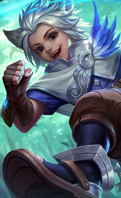
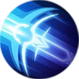
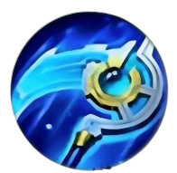
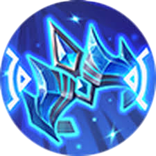
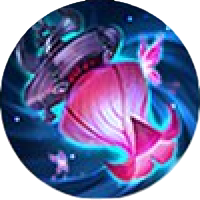
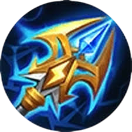
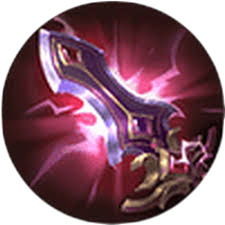

Харит

Мандрівник у Часі
Легенди свідчать, що у Зачарованому Лісі на Землях Світанку проживає давня раса ельфів. В історіях представників цієї котячої раси зображують маленькими, рухливими, грайливими, незалежними та дуже розумними. Проте мало хто знає про давній Союз між ельфами Леоніна та Місячними Ельфами.
З малих років Харит перевершував однолітків у таланті та мудрості. Він швидко став найсильнішим магом серед Леонінів, можливо настільки ж сильним, як інші маги Земель Світанку. Але Леоніни ніколи не виходили за межі Зачарованого Лісу, живучи відокремлено та мирно, самі по собі. Вони так звикли до блаженного існування, що більше не цікавилися мистецтвами магії, рисою цієї раси. Все це не подобалося Хариту і він вирішив залишити Зачарований Ліс у віці 15 років. Харит був відомий амбіціями та пристрастю до мистецтва магії і прагнув стати лідером свого народу.
Харит прибув до столиці Земель Світанку і вступив до загону людей, що борються з орками-загарбниками. Показавши себе в битві, він був помічений Тигрилом, захопивши його бойовим духом та видатними здібностями. Люди казали, що Харит отримав звання лейтенанта і незабаром буде призначено як Імператорський Майстер Магії Монійської Імперії. Це означало, що Харит має імперський дозвіл використовувати магію для управління простором і часом, щоб розкрити Таємниці Світанку. З того часу Харит з гордістю служив в експедиції через Землі Світанку, щоб запечатати зло і захистити справедливість.
Повний азарту і запалу, Харит також знав, що як він отримає звання магістра магії, він стане об'єктом публічної критики. Будучи відданим своїй мрії стати лідером свого народу в магії, Харит безстрашно рушив уперед один. Згодом і Харит виявив, що його життя було поглинене місією та імперією. Харит повільно ставав самотнім і невловимим. Навіть коли він зустрічався зі своїм другом Леоніном, Наною, він не міг запровадити нормальну розмову. Незважаючи на те, що Нана виявляла ознаки прихильності до нього, він не міг висловити свої почуття, вважаючи, що найкращий спосіб захистити її від критики – це бути одному. Зрештою, щоразу, коли Імперія потребувала магічної допомоги, Магістр магії виконував завдання, щоб викорінити зло.

Ключова інформація
Харит отримує осяяння від свого ключа. Він негайно зменшує тривалість негативних ефектів до 45% (залежно кількості найближчих ворожих героїв).
| Магічні черевики | +40 швидкість пересування +10% скорочення перезарядки |
||
 |
Старліумова коса | +70 магічна сила +10% скорочення перезарядки +8% гібридний вампіризм |
Унік.пасив - Криза: протягом 3 сек. після використання навика наступна базова атака нанесе додатково (+100% загальної магічної сили) чистого урона з перезарядженням в 1,5 сек. Потім ненадовго отримує 10% швидкості пересування |
| Райське перо | +55 магічна сила +20% швидкість атака 10% вампіризм +5% скорочення перезарядки |
Унік. пасив - Наслання: кожна базова атака додатково наносить 50 (+30% загальної магічної сили). Унік. пасив - Імпульс: базові атаки дають 6% дод. швидкість атаки на 3 сек. Складається до разів. (До 30%) | |
| Священный кристалл | +185 магічна сила | Унік. пасив - Містичний: дає 21-35% додаткової магічної сили(залежно від рівня) | |
| Криваві крила | +90 магічна сила | Унік. пасив - Страж: отримує 800 (100% загальної магічної сили) од. щита, який буде відновлюватись 20 сек. після отримання урону. Щит також дає 30 швидкості пересування, поки активний і 150 швидкості пересування на 1 сек., коли зруйнується | |
 |
Зимова корона | +45 адаптивна атака +400 оз +5% скорочення перезарядки |
Активна навичка Заморозка: герой заморожуеться, роблячись невловимим для прицілу та несприйнятливим до урону на 2 сек. (перезарядження 100 сек.). У замороженому стані не можна переміщатися або застосовувати навички, але всже застосовані навички не будуть перервані |
 |
Ліхтар бажань | +75 магічна сила +400 мани +10% скорочення перезарядки |
Унік. пасив - Метелик-богиня: за кожні 800 од. магіного урону, нанесеного ворожому герою(розраховується до зниження урону), для атаки закликатиметься иетелик-богиня, який нанесе магіччний урон, що дорівнює 8% від його поточного оз |
 |
Жезл блискавок | +75 магічна сила +400 мани +10% скорочення перезарядки |
Унік. пасив - Резонат: кожні 6 сек. насупний навик резоную, завдаючи (120% загальної магічної сили) од. магічного урону максимально по 3 ворогам і прискорюючи героя на 30%. Ефект спадає за 2 сек. |
| Палаючий жезл | +75 магічна сила +400 оз +5% швидкість пересування |
Пасив. - Опік: нанесення магіного урону завдаючи підпалювання цілі на 3 сек., також нанесення додаткового магіного урону, що дорівнює 1% від мак. оз цілі на секунду. Унік. пасив - Виснаження життя: нанесення урону знизить ефекти щита та регенерації оз до 50% від норми на 3 сек. | |
 |
Божественний Меч | +60 магічна сила | Унік: 40% маг. проникнення. Унік пасив - Руйнівник заклинань: при атаці ворога отримує 0,1% доп. магічного проникнення за кожну одиницю магічного захисту ворога максимамум 20% |
Основне спорядження героя складається з 5 ключових предметів: Магічні черевики, Старліумова коса, Райське перо, Священний кристал та Криваві крила. Шостий слот спорядження варіюється в залежності від складу ворожої команди. Якщо багато прокастерів беремо Зимову корону. Якщо багато танків без магічного захисту - підійде Ліхтар бажань. Проти тонких героїв - ефективно працює Жезл блискавок. Якщо у ворожою команди є герой з відновленням здоров'я від навичок або хілер беремо Палаючий жезл. В ішних випадках гарним вибором буде Божественний меч.